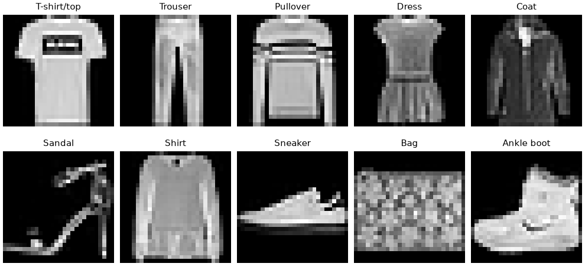
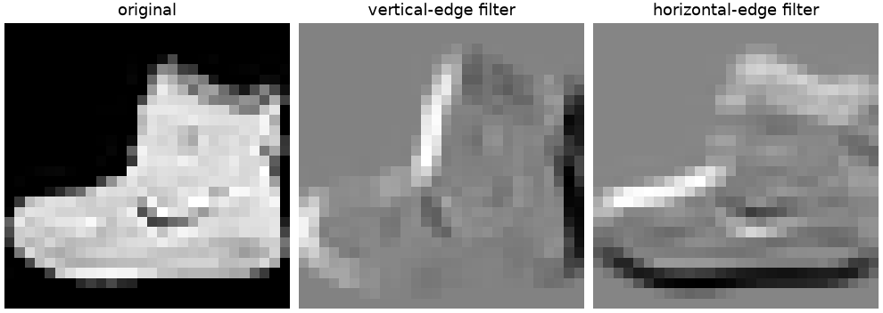
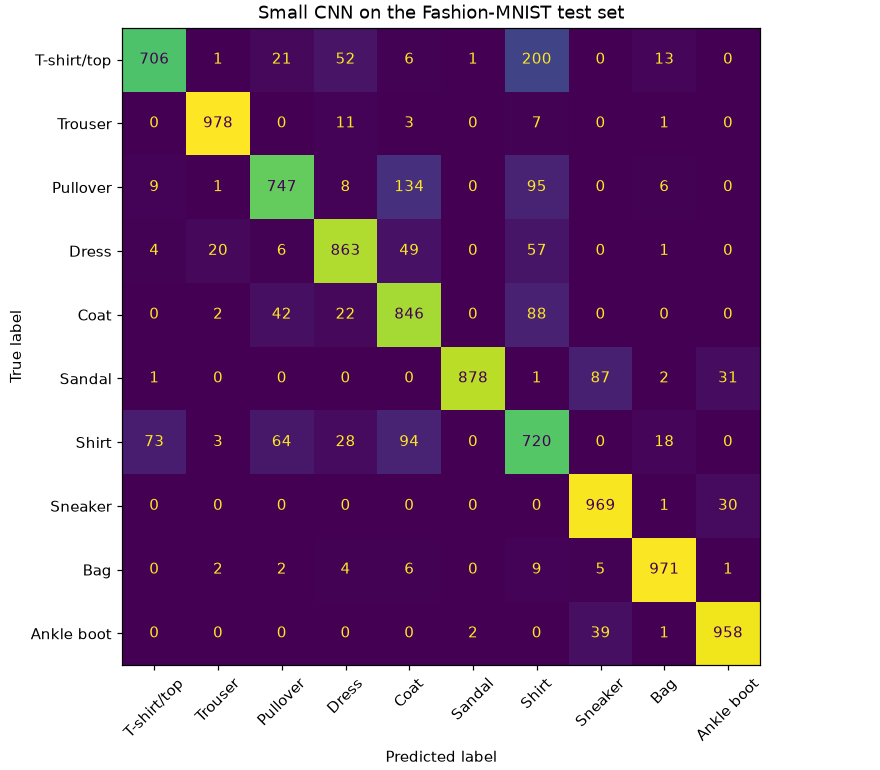
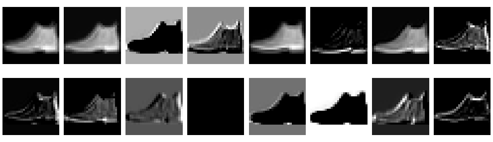
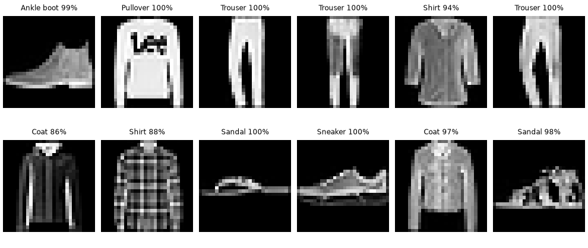

🖼️ Lesson 10.3: Convolutional Neural Networks
Teach a network to see: build a convolutional neural network in PyTorch that recognizes clothing in photos, and find out why it beats a plain dense network with a fraction of the weights.
🎯 Learning Objectives
By the end of this lesson, you will be able to:
- Explain what a convolution filter and a pooling layer compute, and why sharing one small filter across the whole image suits pictures
- Predict the output shape and the parameter count of
nn.Conv2dandnn.MaxPool2dlayers - Build a CNN as an
nn.Moduleand train it on Fashion-MNIST with a validation set and a fixed seed - Compare it with a dense-network baseline using test accuracy, per-class accuracy and a confusion matrix
- Save trained weights with
state_dictand reload them safely withweights_only=True
In This Lesson
🧭 Why Images Need a Different Network
In Lesson 10.2 you trained dense networks: every input connects to every neuron in the next layer. That works well when each input column means something on its own, like days_since_last_order. A photo is different. A single pixel means almost nothing; what matters is the pattern it forms with its neighbors: an edge, a corner, a stripe, a buckle.
A dense network throws that structure away. It flattens a 28 × 28 image into a row of 784 numbers and treats pixel 300 and pixel 301 as unrelated, even though they sit side by side. Worse, if a sneaker moves three pixels to the left, every input changes and the network has to have learned "sneaker" separately at each position. A convolutional neural network (CNN) builds the right assumptions about images into its architecture instead of hoping to learn them.
💡 Mental Model: A Stencil and a Flashlight
Picture a small stencil, 3 by 3 squares, cut to match one pattern, say "dark on the left, bright on the right". You slide it across the photo one step at a time, and at every position you write down how well the patch underneath matches. The result is a new image, a feature map, that is bright wherever that pattern appears. That stencil is a filter (or kernel), and sliding it is a convolution.
A convolutional layer holds many stencils, and the network learns their patterns during training. The first layer ends up with edge and blob detectors. The next layer slides its stencils over those feature maps, so it detects patterns of edges: corners, stripes, curves. Stack a few layers and the network is detecting collars, soles and straps.
Two ideas make this efficient. Local connectivity: each output looks at a small window, not the whole image. Weight sharing: the same stencil is used at every position, so a pattern learned in one corner is recognized everywhere, and one 3 × 3 filter costs only 9 weights plus a bias however big the image is. You will see shortly that this lets a CNN beat a dense network while spending far fewer weights on the image itself.
🤔 Why This Matters
Convolutions are the backbone of almost all practical computer vision: product-photo tagging, medical imaging, quality inspection, satellite imagery. In Lesson 10.5 you will borrow a large CNN that someone else trained on a million photos. Understanding what its layers compute, and what shapes flow between them, is what lets you reuse it with confidence instead of treating it as a black box.
👕 Fashion-MNIST
Fashion-MNIST is a public dataset of 70,000 small grayscale photos of clothing in 10 classes (MIT license). It was made as a harder drop-in replacement for the classic handwritten-digit set: same size, same format, but shirts and pullovers are much easier to confuse than a 1 and a 7. torchvision downloads it the first time you ask, into the data/ folder of your project (about 26 MB to download); later runs find the files and skip the download.
import torch
from torch import nn
from torch.utils.data import DataLoader, Subset
from torchvision import datasets, transforms
train_full = datasets.FashionMNIST("data", train=True, download=True, transform=transforms.ToTensor())
test_set = datasets.FashionMNIST("data", train=False, download=True, transform=transforms.ToTensor())
print(len(train_full), len(test_set))
print(train_full.classes)Output
60000 10000
['T-shirt/top', 'Trouser', 'Pullover', 'Dress', 'Coat', 'Sandal', 'Shirt', 'Sneaker', 'Bag', 'Ankle boot']transforms.ToTensor() turns each image into a float tensor with values between 0 and 1. Look at one:
image, label = train_full[0]
print(image.shape, image.dtype)
print(f"pixel values {image.min():.1f} to {image.max():.1f}; label {label} = {train_full.classes[label]}")Output
torch.Size([1, 28, 28]) torch.float32
pixel values 0.0 to 1.0; label 9 = Ankle bootThe shape is (1, 28, 28): channels, height, width. Grayscale has one channel; a color photo has three (red, green, blue). PyTorch always puts the channel first, and a batch adds one more dimension in front, so a batch of 64 images is (64, 1, 28, 28). Keep that four-part shape in mind: most CNN errors are shape errors.
import matplotlib.pyplot as plt
first_of_each = [int((train_full.targets == c).nonzero()[0]) for c in range(10)]
fig, axes = plt.subplots(2, 5, figsize=(9, 4.2), layout="constrained")
for ax, i in zip(axes.flat, first_of_each):
img, lab = train_full[i]
ax.imshow(img.squeeze(), cmap="gray")
ax.set_title(train_full.classes[lab], fontsize=10)
ax.axis("off")
plt.show()
To keep every step fast on an ordinary laptop CPU, this lesson trains on the first 20,000 of the 60,000 training images and keeps 5,000 other training images aside as a validation set for watching progress during training. The 10,000 test images stay locked away until the end, exactly as in Lesson 1.2.
train_set = Subset(train_full, range(20_000))
val_set = Subset(train_full, range(55_000, 60_000))
print(len(train_set), len(val_set), len(test_set))
print(torch.bincount(train_full.targets[:20_000]))Output
20000 5000 10000
tensor([1935, 2025, 1982, 2011, 1967, 2010, 2068, 2003, 1971, 2028])The 20,000 training images are close to balanced, about 2,000 per class, so chance level is 10% accuracy and no class dominates. Accuracy is a fair headline metric here, unlike churn.
🔍 A Convolution by Hand
Before letting PyTorch learn filters, apply one yourself. Here is a tiny 5 × 5 "image" whose left side is dark (0) and right side bright (9), and a 3 × 3 filter that responds to "dark on the left, bright on the right": a vertical-edge detector.
At each position the filter multiplies the nine pixels under it by its nine weights and adds them up (plus a bias, zero here). For output row i, column j:
out[i, j] = sum over u, v of w[u, v] × x[i + u, j + v] + b
torch.nn.functional.conv2d does exactly this. It wants 4-D tensors: the image as (batch, channels, height, width) and the filter as (out channels, in channels, height, width).
import torch.nn.functional as F
x = torch.tensor([[0, 0, 0, 9, 9]] * 5, dtype=torch.float32)
vertical_edge = torch.tensor([[-1, 0, 1]] * 3, dtype=torch.float32)
out = F.conv2d(x.reshape(1, 1, 5, 5), vertical_edge.reshape(1, 1, 3, 3))
print(out.squeeze())Output
tensor([[ 0., 27., 27.],
[ 0., 27., 27.],
[ 0., 27., 27.]])The output is smaller, 3 × 3, because a 3 × 3 window fits in only three positions across five pixels. Where the window sits entirely on the flat dark area the answer is 0; wherever it straddles the edge, the answer is 27. The filter has turned "where is there a vertical edge?" into a map.
💡 Convolution or Correlation?
Mathematicians flip the kernel before sliding it; deep-learning libraries do not (strictly, they compute a cross-correlation). Because the weights are learned, the difference never matters in practice. Everyone calls it convolution.
Now apply the same idea to a real photo. With padding=1 the image gets a one-pixel border of zeros, so the output keeps its 28 × 28 size. Two filters, one for vertical edges and its transpose for horizontal edges:
boot = train_full[first_of_each[9]][0].unsqueeze(0) # shape (1, 1, 28, 28)
edge_filters = torch.stack([vertical_edge, vertical_edge.T]).unsqueeze(1)
print(boot.shape, edge_filters.shape)
edges = F.conv2d(boot, edge_filters, padding=1)
print(edges.shape)
fig, axes = plt.subplots(1, 3, figsize=(9, 3.2), layout="constrained")
panels = [(boot[0, 0], "original"), (edges[0, 0], "vertical-edge filter"), (edges[0, 1], "horizontal-edge filter")]
for ax, (img, title) in zip(axes, panels):
ax.imshow(img, cmap="gray")
ax.set_title(title)
ax.axis("off")
plt.show()Output
torch.Size([1, 1, 28, 28]) torch.Size([2, 1, 3, 3])
torch.Size([1, 2, 28, 28])
Stacking the two filters gave an output with two channels, one feature map per filter. That is all a convolutional layer is: a stack of filters, each producing one channel of the output.
📐 Channels, Padding and Pooling
nn.Conv2d is the learnable version: it creates the filters with random weights and lets training tune them. Its main arguments:
| Argument | Meaning |
|---|---|
in_channels | channels coming in: 1 for grayscale, 3 for RGB, or the previous layer's out_channels |
out_channels | how many filters, so how many feature maps come out |
kernel_size | the window, usually 3 (meaning 3 × 3) |
padding | zeros added around the border; padding=1 with a 3 × 3 kernel keeps the size |
stride | step between positions; 2 halves the size |
One formula predicts the output size along each side, where n is the input size, k the kernel, p the padding and s the stride (rounded down):
out = (n + 2p - k) / s + 1
For the edge filters: (28 + 2 - 3) / 1 + 1 = 28. Without padding: (28 - 3) + 1 = 26.
conv1 = nn.Conv2d(in_channels=1, out_channels=16, kernel_size=3, padding=1)
batch = torch.zeros(64, 1, 28, 28)
print("weight", tuple(conv1.weight.shape), " bias", tuple(conv1.bias.shape))
print("after conv:", tuple(conv1(batch).shape))
print("after pool:", tuple(nn.MaxPool2d(2)(conv1(batch)).shape))
print("conv parameters:", sum(p.numel() for p in conv1.parameters()))
print(f"dense layer with the same output size: {784 * 16 * 28 * 28 + 16 * 28 * 28:,}")Output
weight (16, 1, 3, 3) bias (16,)
after conv: (64, 16, 28, 28)
after pool: (64, 16, 14, 14)
conv parameters: 160
dense layer with the same output size: 9,847,040Sixteen filters of 1 × 3 × 3 weights plus 16 biases: 160 parameters. A dense layer producing the same 16 × 28 × 28 outputs would need almost ten million. That gap is weight sharing at work. In general a conv layer has out_channels × (in_channels × k × k) + out_channels parameters: every filter spans all incoming channels.
🏊 Pooling: Keep the Strongest Signal
nn.MaxPool2d(2) looks at each 2 × 2 block of a feature map and keeps only the largest value, halving the height and width. It has no weights. Pooling does two useful things: it cuts the computation for the next layers by four, and it makes the network a little tolerant of small shifts, because "an edge somewhere in this 2 × 2 block" survives a one-pixel move.
The classic CNN repeats a block of convolution → ReLU → pooling a few times, so the maps get smaller and more numerous, then flattens them and finishes with ordinary dense layers that turn the detected features into 10 class scores:
Here is that network as an nn.Module, the pattern you met in Lesson 10.2: layers are created in __init__ and wired together in forward. Grouping them into a features part and a classifier part is a common convention (torchvision's own models use it), and it will make Lesson 10.5 feel familiar.
class SmallCNN(nn.Module):
def __init__(self):
super().__init__()
self.features = nn.Sequential(
nn.Conv2d(1, 16, kernel_size=3, padding=1), nn.ReLU(), nn.MaxPool2d(2),
nn.Conv2d(16, 32, kernel_size=3, padding=1), nn.ReLU(), nn.MaxPool2d(2),
)
self.classifier = nn.Sequential(
nn.Flatten(), nn.Linear(32 * 7 * 7, 64), nn.ReLU(), nn.Linear(64, 10),
)
def forward(self, x):
return self.classifier(self.features(x))
torch.manual_seed(42)
cnn = SmallCNN()
x = torch.zeros(64, 1, 28, 28)
for layer in list(cnn.features) + list(cnn.classifier):
x = layer(x)
print(f"{layer.__class__.__name__:10s} {tuple(x.shape)}")Output
Conv2d (64, 16, 28, 28)
ReLU (64, 16, 28, 28)
MaxPool2d (64, 16, 14, 14)
Conv2d (64, 32, 14, 14)
ReLU (64, 32, 14, 14)
MaxPool2d (64, 32, 7, 7)
Flatten (64, 1568)
Linear (64, 64)
ReLU (64, 64)
Linear (64, 10)Tracing a dummy batch through the layers one at a time is the single most useful debugging habit for CNNs. It tells you the number the first nn.Linear needs (32 × 7 × 7 = 1,568) instead of making you work it out on paper. The output is 10 raw scores per image, called logits: no softmax, because nn.CrossEntropyLoss applies it internally.
💡 Why torch.manual_seed(42)?
A new network starts from random weights, and a shuffled DataLoader draws a random order of images. Fixing the seed right before creating the model (and again before training) makes your run repeat exactly, so you can tell a real improvement from a lucky draw. The page's numbers came from these seeds.
🎯 A Dense Baseline
As always, a model earns its place only by beating a baseline. Chance is 10%. The more honest baseline is the network you already know: a dense network from Lesson 10.2 with one hidden layer. First, the training helpers, the same loop as in 10.2 wrapped in functions so both models train identically:
val_loader = DataLoader(val_set, batch_size=1000)
test_loader = DataLoader(test_set, batch_size=1000)
def train_one_epoch(model, loader, optimizer, loss_fn):
model.train()
total_loss, n = 0.0, 0
for xb, yb in loader:
optimizer.zero_grad()
loss = loss_fn(model(xb), yb)
loss.backward()
optimizer.step()
total_loss += loss.item() * len(yb)
n += len(yb)
return total_loss / n
def accuracy(model, loader):
model.eval()
correct, n = 0, 0
with torch.no_grad():
for xb, yb in loader:
correct += (model(xb).argmax(dim=1) == yb).sum().item()
n += len(yb)
return correct / n
def fit(model, epochs=5, lr=1e-3):
torch.manual_seed(42)
train_loader = DataLoader(train_set, batch_size=64, shuffle=True)
optimizer = torch.optim.Adam(model.parameters(), lr=lr)
loss_fn = nn.CrossEntropyLoss()
for epoch in range(1, epochs + 1):
loss = train_one_epoch(model, train_loader, optimizer, loss_fn)
print(f"epoch {epoch}: train loss {loss:.3f} validation accuracy {accuracy(model, val_loader):.3f}")Two details matter. model.train() and model.eval() switch layers such as dropout and batch normalization between their training and prediction behavior (this model has none yet; the project does). torch.no_grad() skips gradient bookkeeping while evaluating, which saves memory and time. Now the baseline:
torch.manual_seed(42)
mlp = nn.Sequential(nn.Flatten(), nn.Linear(28 * 28, 128), nn.ReLU(), nn.Linear(128, 10))
print(f"dense network parameters: {sum(p.numel() for p in mlp.parameters()):,}")
fit(mlp)Output (yours may vary slightly)
dense network parameters: 101,770
epoch 1: train loss 0.697 validation accuracy 0.818
epoch 2: train loss 0.474 validation accuracy 0.811
epoch 3: train loss 0.429 validation accuracy 0.849
epoch 4: train loss 0.394 validation accuracy 0.860
epoch 5: train loss 0.369 validation accuracy 0.854Training output on this page is labeled "may vary": with the same seed and the same number of CPU threads, PyTorch repeats a run exactly, but a different processor or library build can change the last digits. The trend, not the third decimal, is what to compare.
🚀 Training the CNN
Same data, same loop, same five epochs, same optimizer. Only the model changes:
torch.manual_seed(42)
cnn = SmallCNN()
print(f"CNN parameters: {sum(p.numel() for p in cnn.parameters()):,}")
fit(cnn)Output (yours may vary slightly)
CNN parameters: 105,866
epoch 1: train loss 0.759 validation accuracy 0.803
epoch 2: train loss 0.463 validation accuracy 0.830
epoch 3: train loss 0.397 validation accuracy 0.859
epoch 4: train loss 0.357 validation accuracy 0.878
epoch 5: train loss 0.329 validation accuracy 0.873Validation accuracy says the CNN is ahead. Now, once, open the test set for both models:
for name, model in [("dense network", mlp), ("CNN", cnn)]:
print(f"{name:14s} test accuracy {accuracy(model, test_loader):.3f}")Output (yours may vary slightly)
dense network test accuracy 0.840
CNN test accuracy 0.864The CNN reaches 86.4% on the test set against 84.0% for the dense network, with about the same total number of parameters (105,866 against 101,770). Look at where those parameters sit, though: the two convolutional layers use only 4,800 of them (160 + 4,640); the rest are in the dense classifier at the end. The dense network spends 100,480 weights on its very first layer, looking at raw pixels. Notice also the trend: the dense network stalls around 85% validation accuracy, while the CNN is still improving at epoch 5. With more epochs, the gap widens.
✅ A Fair Comparison
The two models saw the same 20,000 images in the same order, with the same optimizer, learning rate and number of epochs, and were checked on the same 10,000 test images. Only the architecture changed, so the gap belongs to the architecture. Keep comparisons this clean in your own work.
👀 What Did It Learn?
A single accuracy hides which classes the model gets wrong. Collect the CNN's test predictions and draw a confusion matrix (Lesson 1.4) with scikit-learn, which accepts the tensors once they are converted to NumPy arrays:
from sklearn.metrics import ConfusionMatrixDisplay
cnn.eval()
with torch.no_grad():
test_pred = torch.cat([cnn(xb).argmax(dim=1) for xb, _ in test_loader])
y_test = test_set.targets
fig, ax = plt.subplots(figsize=(8, 7), layout="constrained")
ConfusionMatrixDisplay.from_predictions(y_test.numpy(), test_pred.numpy(), display_labels=test_set.classes,
xticks_rotation=45, colorbar=False, ax=ax)
ax.set_title("Small CNN on the Fashion-MNIST test set")
plt.show()
for c, name in enumerate(test_set.classes):
mask = y_test == c
print(f"{name:12s} {(test_pred[mask] == c).float().mean():.3f}")Output (yours may vary slightly)
T-shirt/top 0.706
Trouser 0.978
Pullover 0.747
Dress 0.863
Coat 0.846
Sandal 0.878
Shirt 0.720
Sneaker 0.969
Bag 0.971
Ankle boot 0.958
The confusion matrix tells a clear story. Trousers, bags, sneakers and ankle boots are above 95%. The trouble is the upper body: 200 T-shirts were called shirts, 134 pullovers were called coats, and shirts leak into every other top class. Sandals and sneakers trade some images too. At 28 × 28 pixels, a shirt and a T-shirt can differ by a collar a few pixels wide, so these are the classes where a better architecture, more data or more epochs pay off, and also where a person would hesitate. When you report a model like this, report the weakest classes, not just the average.
You can also look inside. The first convolutional layer's 16 feature maps for one test image show what its learned filters respond to:
with torch.no_grad():
maps = cnn.features[1](cnn.features[0](test_set[0][0].unsqueeze(0))) # conv1, then ReLU
print(test_set.classes[test_set[0][1]], tuple(maps.shape))
fig, axes = plt.subplots(2, 8, figsize=(9, 2.6), layout="constrained")
for k, ax in enumerate(axes.flat):
ax.imshow(maps[0, k], cmap="gray")
ax.axis("off")
plt.show()Output
Ankle boot (1, 16, 28, 28)
📈 Scaling Up
The small CNN is a starting point. These are the standard upgrades, roughly in the order to try them:
- More data and more epochs. All 60,000 training images and 10 to 20 epochs take a small CNN to roughly 90 to 92% test accuracy. On a CPU that is minutes per epoch; on a GPU, seconds.
- Batch normalization (
nn.BatchNorm2d) after each convolution rescales the activations batch by batch. Training becomes faster and less sensitive to the learning rate. The project uses it. - Dropout (
nn.Dropout) randomly zeroes activations during training so the network cannot lean on any single feature. It is switched off bymodel.eval(). - Data augmentation: random flips, small shifts and crops applied to the training images each epoch, so the network sees a slightly different picture every time. It is the cheapest way to fight overfitting on small image sets. Exercise 4 tries it.
- A pretrained network: for real photos, start from a CNN trained on a million images. That is Lesson 10.5.
Augmentation is a training-only transform. Validation and test images are never augmented:
train_transform = transforms.Compose([
transforms.RandomHorizontalFlip(),
transforms.RandomCrop(28, padding=2),
transforms.ToTensor(),
])
print(train_transform)Output
Compose(
RandomHorizontalFlip(p=0.5)
RandomCrop(size=(28, 28), padding=2)
ToTensor()
)💡 Running on a GPU
This course runs on the CPU so that everyone gets the same results. If you have an NVIDIA GPU and a CUDA build of PyTorch, the change is small: pick a device with device = "cuda" if torch.cuda.is_available() else "cpu", move the model once with model.to(device), and move every batch inside the loops with xb, yb = xb.to(device), yb.to(device). Then raise the subset to the full 60,000 images, the batch size to 256 and the epochs to 15 or more. Expect slightly different digits: GPU arithmetic is not bit-identical to CPU arithmetic.
🏛️ A Short History in Four Networks
| Network | Idea it introduced |
|---|---|
| LeNet-5 (1998) | The conv → pool → dense recipe you just built, used to read handwritten digits on checks |
| AlexNet (2012) | A much deeper CNN trained on GPUs with ReLU and dropout; it won the ImageNet challenge by a wide margin and started the deep-learning boom |
| VGG (2014) | Depth from many stacked 3 × 3 convolutions instead of large filters |
| ResNet (2015) | Skip connections that add a block's input to its output, so networks with 50 or more layers still train; the model you reuse in Lesson 10.5 |
⚠️ Common Mistakes
CNN bugs are mostly shape bugs, and the messages tell you the shapes. Two of these mistakes raise no error at all.
1. Forgetting the Channel Dimension
no_channel = torch.zeros(64, 28, 28)
cnn(no_channel)Error
RuntimeError: Given groups=1, weight of size [16, 1, 3, 3], expected input[1, 64, 28, 28] to have 1 channels, but got 64 channels insteadWhat it means: a 3-D tensor is read as one unbatched image of shape (channels, height, width), so PyTorch thinks your batch of 64 is a single image with 64 channels, while the first layer expects 1. Fix: add the channel axis with no_channel.unsqueeze(1), giving (64, 1, 28, 28). Images loaded with ToTensor() already have it; this bites when you build tensors yourself, for example from a NumPy array.
2. The Wrong Size for the First Linear Layer
broken = nn.Sequential(cnn.features, nn.Flatten(), nn.Linear(32 * 28 * 28, 10))
broken(torch.zeros(64, 1, 28, 28))Error
RuntimeError: mat1 and mat2 shapes cannot be multiplied (64x1568 and 25088x10)What it means: after two poolings the maps are 7 × 7, not 28 × 28, so the flattened rows have 1,568 numbers (the 64x1568 in the message) while the layer was built for 25,088. Fix: trace a dummy batch through features and use the size you see. The message always shows batch × actual first and expected × outputs second.
3. Softmax Before CrossEntropyLoss
Adding nn.Softmax as the last layer looks tidy, and nothing complains. Compare the loss on a prediction that is confidently right:
loss_fn = nn.CrossEntropyLoss()
confident_logits = torch.tensor([[12.0] + [-12.0] * 9]) # very sure it is class 0
target = torch.tensor([0])
print(f"logits into the loss : {loss_fn(confident_logits, target):.3f}")
print(f"softmax first : {loss_fn(torch.softmax(confident_logits, dim=1), target):.3f}")Output (no error, and that is the problem)
logits into the loss : 0.000
softmax first : 1.461What happened: CrossEntropyLoss applies softmax itself. Feeding it probabilities applies softmax twice, which squashes every score into the range 0 to 1, so even a perfect answer keeps a loss of about 1.46 and the gradients that drive learning shrink. Training still runs, just slower and worse. Fix: end the model with a plain nn.Linear that outputs logits; call torch.softmax only when you want probabilities to show someone.
4. Predicting in Training Mode
torch.manual_seed(42)
dropout = nn.Dropout(p=0.5)
ones = torch.ones(8)
print(dropout(ones))
print(dropout(ones))
dropout.eval()
print(dropout(ones))Output (no error, and that is the problem)
tensor([2., 2., 2., 2., 0., 2., 0., 0.])
tensor([2., 2., 2., 2., 0., 0., 2., 0.])
tensor([1., 1., 1., 1., 1., 1., 1., 1.])What happened: in training mode, dropout zeroes a random half of its inputs and doubles the rest, so the same input gives different outputs on every call. A model with dropout or batch normalization that predicts in training mode gives noisy, slightly worse predictions, and batch normalization even changes its stored statistics. Fix: call model.eval() before evaluating or predicting, and model.train() before training again. The accuracy and train_one_epoch helpers do it for you.
🛠️ Project: A Better Clothing Classifier
Take the small CNN and make it production-shaped: add batch normalization and dropout, keep the weights from the epoch with the best validation accuracy, report per-class results on the test set, and save the model so another program can load it. Work in a new notebook called lesson_10_3_project (it starts from scratch). Allow about 45 minutes, including about a minute of training.
🛠️ Step 1: Load the data and make the three sets (5 min)
The same split as the lesson: 20,000 images to train on, 5,000 different training images for validation, the official 10,000 for the final test.
import copy
import torch
from torch import nn
from torch.utils.data import DataLoader, Subset
from torchvision import datasets, transforms
train_full = datasets.FashionMNIST("data", train=True, download=True, transform=transforms.ToTensor())
test_set = datasets.FashionMNIST("data", train=False, download=True, transform=transforms.ToTensor())
train_set = Subset(train_full, range(20_000))
val_set = Subset(train_full, range(55_000, 60_000))
val_loader = DataLoader(val_set, batch_size=1000)
test_loader = DataLoader(test_set, batch_size=1000)
classes = train_full.classes
print(len(train_set), len(val_set), len(test_set))Output
20000 5000 10000🛠️ Step 2: Define the improved network (10 min)
Each block is now convolution → batch norm → ReLU → pool, with 32 and 64 filters, and dropout before the last layer. Trace a dummy batch to check the shapes before you train anything.
class FashionCNN(nn.Module):
def __init__(self):
super().__init__()
self.features = nn.Sequential(
nn.Conv2d(1, 32, kernel_size=3, padding=1), nn.BatchNorm2d(32), nn.ReLU(), nn.MaxPool2d(2),
nn.Conv2d(32, 64, kernel_size=3, padding=1), nn.BatchNorm2d(64), nn.ReLU(), nn.MaxPool2d(2),
)
self.classifier = nn.Sequential(
nn.Flatten(), nn.Linear(64 * 7 * 7, 128), nn.ReLU(), nn.Dropout(0.3), nn.Linear(128, 10),
)
def forward(self, x):
return self.classifier(self.features(x))
torch.manual_seed(42)
model = FashionCNN()
print(f"parameters: {sum(p.numel() for p in model.parameters()):,}")
print("features out:", tuple(model.features(torch.zeros(2, 1, 28, 28)).shape))
print("logits out :", tuple(model(torch.zeros(2, 1, 28, 28)).shape))Output
parameters: 421,834
features out: (2, 64, 7, 7)
logits out : (2, 10)🛠️ Step 3: Train, keeping the best epoch (10 min)
After every epoch, measure validation accuracy and keep a copy of the weights whenever it improves. That is a light form of early stopping: if a later epoch overfits, you still have the best one. copy.deepcopy matters: state_dict() returns references to the live tensors, which keep changing as training continues.
def accuracy(model, loader):
model.eval()
correct, n = 0, 0
with torch.no_grad():
for xb, yb in loader:
correct += (model(xb).argmax(dim=1) == yb).sum().item()
n += len(yb)
return correct / n
torch.manual_seed(42)
train_loader = DataLoader(train_set, batch_size=64, shuffle=True)
optimizer = torch.optim.Adam(model.parameters(), lr=1e-3)
loss_fn = nn.CrossEntropyLoss()
best_acc, best_state, best_epoch = 0.0, None, 0
for epoch in range(1, 5):
model.train()
total, n = 0.0, 0
for xb, yb in train_loader:
optimizer.zero_grad()
loss = loss_fn(model(xb), yb)
loss.backward()
optimizer.step()
total += loss.item() * len(yb)
n += len(yb)
val_acc = accuracy(model, val_loader)
if val_acc > best_acc:
best_acc, best_state, best_epoch = val_acc, copy.deepcopy(model.state_dict()), epoch
print(f"epoch {epoch}: train loss {total / n:.3f} validation accuracy {val_acc:.3f}")
model.load_state_dict(best_state)
print(f"kept epoch {best_epoch} (validation accuracy {best_acc:.3f})")Output (yours may vary slightly)
epoch 1: train loss 0.553 validation accuracy 0.857
epoch 2: train loss 0.366 validation accuracy 0.882
epoch 3: train loss 0.307 validation accuracy 0.891
epoch 4: train loss 0.274 validation accuracy 0.903
kept epoch 4 (validation accuracy 0.903)🛠️ Step 4: Test once, class by class (5 min)
Now, and only now, use the test set. Collect predictions and report overall and per-class accuracy, worst class first.
model.eval()
with torch.no_grad():
test_pred = torch.cat([model(xb).argmax(dim=1) for xb, _ in test_loader])
y_test = test_set.targets
test_acc = (test_pred == y_test).float().mean().item()
print(f"test accuracy {test_acc:.3f}")
per_class = {name: (test_pred[y_test == c] == c).float().mean().item() for c, name in enumerate(classes)}
for name, acc in sorted(per_class.items(), key=lambda item: item[1])[:4]:
print(f" {name:12s} {acc:.3f}")Output (yours may vary slightly)
test accuracy 0.892
Shirt 0.632
Pullover 0.812
T-shirt/top 0.845
Dress 0.88989.2% on the test set, up from 86.4% for the small CNN and 84.0% for the dense network, in four epochs on the same images. Shirt is still the hardest class at 63%: better architecture does not erase genuine ambiguity in the data. The test score is a little below the best validation score (90.3%), which is normal: you picked the epoch that looked best on validation, so that number is slightly optimistic.
🛠️ Step 5: Save the weights and reload them safely (5 min)
Save only the state_dict (a dictionary of named weight tensors), not the whole model object. To use it, build the same class and load the weights into it. weights_only=True tells torch.load to accept tensors and plain containers only, never arbitrary pickled Python objects, so a tampered file cannot run code on your machine (it is the default in current PyTorch; writing it keeps the intent visible).
torch.save(model.state_dict(), "fashion_cnn.pt")
restored = FashionCNN()
restored.load_state_dict(torch.load("fashion_cnn.pt", weights_only=True))
restored.eval()
with torch.no_grad():
same = torch.equal(restored(test_set[0][0].unsqueeze(0)), model(test_set[0][0].unsqueeze(0)))
print("identical predictions after reload:", same)
print("tensors saved:", len(model.state_dict()))Output
identical predictions after reload: True
tensors saved: 18The file holds 18 tensors, more than the model's parameter tensors: batch normalization also stores its running mean and variance (and a counter), which model.eval() uses at prediction time. That is one more reason to save the state_dict, which includes them, rather than copying parameters by hand.
🛠️ Step 6: Show predictions and write the summary (10 min)
Plot a dozen test images with the predicted class and the model's confidence, marking mistakes, then print a summary from your own variables.
import matplotlib.pyplot as plt
with torch.no_grad():
probs = torch.softmax(restored(torch.stack([test_set[i][0] for i in range(12)])), dim=1)
conf, pred = probs.max(dim=1)
fig, axes = plt.subplots(2, 6, figsize=(9, 3.8), layout="constrained")
for i, ax in enumerate(axes.flat):
ax.imshow(test_set[i][0].squeeze(), cmap="gray")
true = classes[test_set[i][1]]
mark = "" if pred[i] == test_set[i][1] else f"\n(true: {true})"
ax.set_title(f"{classes[pred[i]]} {conf[i]:.0%}{mark}", fontsize=8)
ax.axis("off")
plt.show()
print(f"""Fashion-MNIST CNN
Training images : {len(train_set):,} (validation {len(val_set):,})
Best epoch : {best_epoch} (validation {best_acc:.3f})
Test accuracy : {test_acc:.3f}
Hardest class : {min(per_class, key=per_class.get)} ({min(per_class.values()):.3f})
Saved : fashion_cnn.pt""")Output (yours may vary slightly)
Fashion-MNIST CNN
Training images : 20,000 (validation 5,000)
Best epoch : 4 (validation 0.903)
Test accuracy : 0.892
Hardest class : Shirt (0.632)
Saved : fashion_cnn.pt
✅ Project Completion Checklist
- Your three sets have 20,000, 5,000 and 10,000 images, and the test set was used only after training
- A dummy batch traced through
FashionCNNgives(2, 64, 7, 7)features and(2, 10)logits - The training loop calls
model.train()before training and the evaluation callsmodel.eval()withtorch.no_grad() - You kept the weights from the epoch with the best validation accuracy
- You reported test accuracy overall and for the hardest classes, and it beats the dense baseline
fashion_cnn.ptreloads withweights_only=Trueand gives identical predictions
🏋️ Hands-on Exercises
Try each one before opening the solution. They continue in the project notebook, so model, restored, train_set, test_set, accuracy and friends already exist.
🏋️ Exercise 1: Shape Detective
A color image batch has shape (1, 3, 64, 64). Without running anything, predict the output shape and the parameter count of nn.Conv2d(3, 8, kernel_size=5, stride=2) (no padding). Then check with code.
💡 Hint
Use out = (n + 2p - k) / s + 1, rounded down. Each of the 8 filters spans all 3 input channels.
✅ Solution
detective = nn.Conv2d(3, 8, kernel_size=5, stride=2)
print(tuple(detective(torch.zeros(1, 3, 64, 64)).shape))
print(sum(p.numel() for p in detective.parameters()))Output
(1, 8, 30, 30)
608(64 + 0 - 5) / 2 + 1 = 30.5, rounded down to 30, so the output is 8 maps of 30 × 30. Parameters: 8 filters × (3 × 5 × 5) weights = 600, plus 8 biases = 608.
🏋️ Exercise 2: Where Do the Parameters Live?
List every parameter tensor of FashionCNN with its shape and size. Which single layer holds most of the parameters: a convolution or a linear layer? What does that tell you about where to save weights if the model had to be smaller?
💡 Hint
model.named_parameters() yields (name, tensor) pairs; tensor.numel() counts its entries.
✅ Solution
total = sum(p.numel() for p in model.parameters())
for name, p in model.named_parameters():
if p.numel() > 1000:
print(f"{name:22s} {str(tuple(p.shape)):18s} {p.numel():>9,} {p.numel() / total:.1%}")Output
features.4.weight (64, 32, 3, 3) 18,432 4.4%
classifier.1.weight (128, 3136) 401,408 95.2%
classifier.4.weight (10, 128) 1,280 0.3%The first linear layer, classifier.1, holds 95% of all the parameters: 3,136 flattened features times 128 neurons. Both convolutions together are under 5%. If the model had to shrink, the first move would be to make that layer smaller or to remove it with global average pooling (the bonus challenge), not to cut filters.
🏋️ Exercise 3: The Most Confident Mistakes
Find the 8 test images the project model got wrong with the highest confidence, and plot them with the predicted and true class. Are these model failures, or hard (even mislabeled-looking) images?
💡 Hint
Compute softmax probabilities for the whole test set, take max(dim=1) for confidence and prediction, keep the rows where the prediction is wrong, and sort by confidence with argsort(descending=True).
✅ Solution
with torch.no_grad():
all_probs = torch.cat([torch.softmax(restored(xb), dim=1) for xb, _ in test_loader])
all_conf, all_pred = all_probs.max(dim=1)
wrong = (all_pred != test_set.targets).nonzero().squeeze(1)
worst = wrong[all_conf[wrong].argsort(descending=True)[:8]]
print(f"{len(wrong)} mistakes; the 8 most confident are at least {all_conf[worst].min():.2f} sure")
fig, axes = plt.subplots(1, 8, figsize=(9, 2.2), layout="constrained")
for ax, i in zip(axes, worst.tolist()):
ax.imshow(test_set[i][0].squeeze(), cmap="gray")
ax.set_title(f"{classes[all_pred[i]]}\ntrue: {classes[test_set.targets[i]]}", fontsize=7)
ax.axis("off")
plt.show()Output (yours may vary slightly)
1083 mistakes; the 8 most confident are at least 1.00 sureMost of the confident mistakes are between look-alike tops (shirt, T-shirt, pullover, coat), and several are genuinely ambiguous at 28 × 28 pixels: a person would hesitate too. A softmax "confidence" of 0.99 is not a guarantee. Neural networks are often overconfident, which matters when you use the probabilities to make decisions.
🏋️ Exercise 4: Data Augmentation (Stretch)
Make an augmented copy of the training data with the train_transform idea from the lesson (random horizontal flip plus RandomCrop(28, padding=2)), using the same 20,000 images. Train a fresh FashionCNN on it for the same 4 epochs, keeping the best epoch, and compare its test accuracy with the project model. Then explain the result.
💡 Hint
Load a second datasets.FashionMNIST(..., transform=train_transform) and take Subset(..., range(20_000)) of it. Validation and test data keep plain ToTensor(). Wrap the project's training loop in a function so you can reuse it.
✅ Solution
train_transform = transforms.Compose([
transforms.RandomHorizontalFlip(),
transforms.RandomCrop(28, padding=2),
transforms.ToTensor(),
])
augmented = Subset(datasets.FashionMNIST("data", train=True, download=True, transform=train_transform), range(20_000))
def train_best(net, dataset, epochs=4):
torch.manual_seed(42)
loader = DataLoader(dataset, batch_size=64, shuffle=True)
opt = torch.optim.Adam(net.parameters(), lr=1e-3)
best, best_state = 0.0, None
for epoch in range(1, epochs + 1):
net.train()
for xb, yb in loader:
opt.zero_grad()
nn.functional.cross_entropy(net(xb), yb).backward()
opt.step()
acc = accuracy(net, val_loader)
print(f"epoch {epoch}: validation accuracy {acc:.3f}")
if acc > best:
best, best_state = acc, copy.deepcopy(net.state_dict())
net.load_state_dict(best_state)
return net
torch.manual_seed(42)
aug_model = train_best(FashionCNN(), augmented)
print(f"test accuracy plain {test_acc:.3f} augmented {accuracy(aug_model, test_loader):.3f}")Output (yours may vary slightly)
epoch 1: validation accuracy 0.826
epoch 2: validation accuracy 0.852
epoch 3: validation accuracy 0.848
epoch 4: validation accuracy 0.878
test accuracy plain 0.892 augmented 0.874In this short run, augmentation made test accuracy worse (87.4% against 89.2%), and that is an honest, common result. Flipped and shifted images make each epoch harder, so the model needs more epochs to benefit; augmentation pays off over longer training, when the plain model would start to memorize the training images. Always test it on validation data rather than assuming it helps. Note also that a horizontal flip suits clothing (a flipped shoe is still a shoe) but would be wrong for, say, digits or text.
🎯 Quick Quiz
🎯 Check Your Understanding
Question 1: What shape does this print?
quiz_conv = nn.Conv2d(1, 8, kernel_size=5)
print(quiz_conv(torch.zeros(4, 1, 28, 28)).shape)Question 2: How many parameters does nn.Conv2d(16, 32, kernel_size=3) have?
Question 3: In this lesson the CNN beat the dense network while spending far fewer weights on the image itself. What is the main reason?
Question 4: The project model has dropout and batch normalization. Why must you call model.eval() before measuring test accuracy?
Question 5: You train a 10-class model with nn.CrossEntropyLoss. What should the last layer of the network be?
❓ Common Questions at This Stage
Training is slow on my laptop. Is something wrong?
Probably not. CNN training is heavy arithmetic, and a CPU does it a few thousand images per second at best. The whole lesson is sized to run in a few minutes on a CPU. If it is much slower, check that you used the 20,000-image subset, that no other heavy program is running, and that you did not accidentally train inside an evaluation loop. A GPU (see Scaling Up) is the real fix for bigger work.
Why kernel size 3 almost everywhere?
Two stacked 3 × 3 convolutions see a 5 × 5 neighborhood with fewer weights (2 × 9 = 18 per channel pair) than one 5 × 5 filter (25), and they add an extra ReLU in between, which makes the model more expressive. The VGG networks showed this works, and most modern CNNs follow it.
Should I use a CNN on Pinecrest's customer table?
No. A CNN's assumptions (neighboring values belong together, the same pattern can appear anywhere) fit images, audio and other grid-like data. Columns of a customer table have no neighbors in that sense: swapping two columns changes nothing about the customer. For tabular data, gradient boosting (Lesson 5.3) usually beats neural networks and is far cheaper to train and explain.
My accuracy differs from the page in the second decimal. Why?
Check the setup first: the 20,000-image subset, torch.manual_seed(42) right before creating the model and before creating the shuffled DataLoader, the same learning rate and number of epochs. If those match, small differences come from your processor and PyTorch build. Run the comparison twice with different seeds: a real improvement survives a change of seed.
🌟 Going Further: Bonus Challenge
Replace nn.Flatten() and the first nn.Linear of FashionCNN with global average pooling: nn.AdaptiveAvgPool2d(1) then nn.Flatten(), so each of the 64 feature maps becomes one number, followed by nn.Linear(64, 10). Count the parameters (Exercise 2 showed where most of them were), train for the same 4 epochs and compare the test accuracy. Then add a third convolution block with 128 filters and try again. Write down which change bought the most accuracy per parameter. ResNet, which you will use in Lesson 10.5, ends with exactly this kind of global average pooling.
📓 Learning Journal
Take five minutes to write in your learning journal (the journal.md file you started in Lesson 0.1, or a paper notebook). Jot down:
- Key concepts you learned today
- Techniques that clicked (and the ones that have not, yet)
- Questions or confusion to come back to
- Ideas to try on your own
- Progress and feelings: how did this lesson go for you?
✍️ This lesson's prompt: Explain the stencil-and-flashlight picture of a convolution in your own words, then write the shape of a batch at every stage of your FashionCNN, from (64, 1, 28, 28) to (64, 10), without looking. Which classes did your model confuse most, and would a person confuse them too?
📝 Lesson Summary
🎓 Key Takeaways
- A convolution slides a small learned filter over the image; each filter produces one feature map (one output channel)
- Local connectivity and weight sharing give CNNs far fewer weights per layer than dense layers, and let a pattern be found anywhere
- Image batches are
(batch, channels, height, width); output size per side is(n + 2p - k) / s + 1, rounded down - A conv layer has
out × (in × k × k) + outparameters; max pooling has none and halves height and width - Trace a dummy batch through the layers to get shapes right, especially the input size of the first
nn.Linear - End with logits for
nn.CrossEntropyLoss; switchmodel.train()/model.eval()and evaluate undertorch.no_grad() - Pick the best epoch on a validation set, test once, and save the
state_dict; load it withweights_only=True
🏆 What You've Accomplished
- You applied a convolution by hand and watched a filter find the edges of a boot
- You built a CNN as an
nn.Moduleand beat a dense network with a fair, seeded comparison - You read a confusion matrix and the network's own feature maps to see what it learned
- You improved the model with batch normalization and dropout, checkpointed the best epoch and saved it safely
🔭 Looking Ahead
In Lesson 10.4: Sequence Models you will move from grids to sequences: recurrent networks and LSTMs that read Pinecrest's daily store sales one day at a time to forecast tomorrow, plus a first look at attention. Then, in Lesson 10.5, you will come back to images and reuse a CNN that someone else trained on a million photos.
📋 Before the Next Lesson
- Keep your project notebook; Lesson 10.5 contrasts training from scratch with transfer learning.
- Rerun the project with
torch.manual_seed(7)in both places. How much do the validation and test accuracy move? That spread is your noise level. - Without running it, predict the parameter count of
nn.Conv2d(3, 64, kernel_size=7), the first layer of ResNet-18 (which has no bias). Then check.
🌱 Encouragement for the Journey
You just built the kind of network that started the deep-learning era, and you know what every layer of it does, down to the shape of each tensor and the number of weights. If shapes still trip you up, that is completely normal: experienced practitioners trace dummy batches every day. The habit you practiced here, a fair baseline, one look at the test set, and a saved model you can reload, is exactly what makes deep learning trustworthy rather than magical.